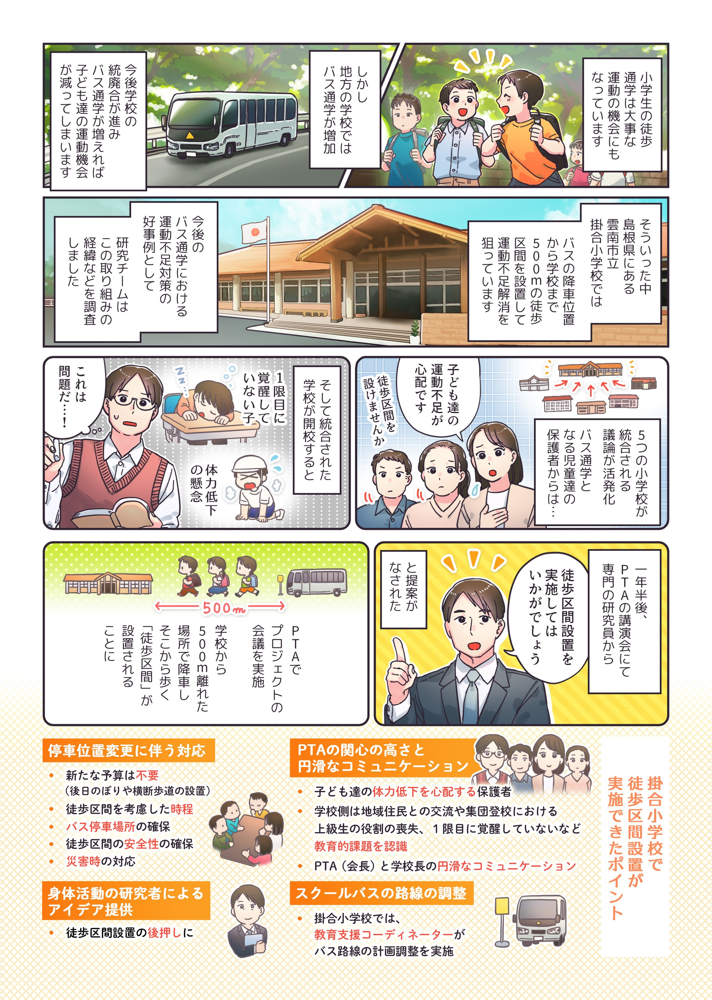

スクールバスの徒歩区間設置の提案
バス通学の子どもの歩く機会を確保するには
子どもの身体活動量を確保する上で、徒歩通学は非常に重要な機会です。しかし、中山間地域などでは学校の統廃合が進み、スクールバスによる通学が増えたことで、児童が日常的に歩く機会が減少しています。ここでは、バスの停車位置をあえて学校から離れた場所に設定する「徒歩区間設定（リモートドロップオフ）」の取り組みについて、その導入の実装過程と、継続を支える要因を整理して提案します。

なぜ徒歩区間を設定するのか
子どもにとって徒歩による登校は、単なる移動手段ではありません。友だちとの関係づくりや地域の人との挨拶、朝の生活リズムを整えて授業への覚醒度を高めるといった、心身の健やかな成長を支える日常的な教育の機会です。しかし、スクールバスでの送迎に完全に頼ってしまうと、1時間目の始業時の覚醒度の低下をはじめ教育的な課題が生じる可能性があります。少子化によりバス通学が増加する地域において、どのように児童の歩く機会を維持するかが重要な課題となっています。
専門家の提案と関係者の連携を促す
島根県雲南市の掛合小学校では、2009年からスクールバスを学校から約500メートル離れた体育館に停車させ、そこから徒歩で集団登校する取り組みを行っています。本研究では、この取り組みがどのような経緯で導入されたかを明らかにするため、インタビューと当時の会議資料の収集を行いました。集まったデータをもとに、実装科学の枠組みである「実装研究のための統合フレームワーク（CFIR）」を用いて、導入をスムーズにした要因と妨げになった要因を分析しました。
連携しやすい風土と調整役の存在が鍵
分析の結果、徒歩区間を円滑に設定・継続するためには、以下の要因が効果的であることが分かりました。統合前からの保護者の高い関心: 小学校の統合前から、保護者の間で児童の体力低下を心配する声や徒歩区間確保の要望が共有されていました。 専門家によるタイムリーな提案: PTAと教員が集まる講演会で、専門家（研究員）が具体的なアイデアを盛り込んだ資料を提示したことが、意思決定の大きな転換点となりました。 教育支援コーディネーターの活躍: 教育委員会から学校に派遣されていたコーディネーターが、運行計画の作成やバス会社との連絡調整といった実務を一手に担ったことで、年度途中での柔軟な変更や教員の負担軽減が実現しました。 物理的・人的な安全資源: バスが安全に停車・転回できるスペース（体育館横）が確保できたことや、警察の指導による横断歩道の設置、地域住民や教員による見守り体制が整っていたことが継続を後押ししました。 一方で、適切な停車場所の確保の難しさや、台風などの災害発生時の対応判断が必要になる点が、妨げとなる要因として挙げられました。
実践への示唆：
子どもの健康的な成長を地域全体で支える自治体や学校、地域が連携してスクールバスの徒歩区間を設定する際は、まず保護者や学校側が「児童の体力低下や朝の生活リズム」に関する課題感を共有しておくことが重要です。そのうえで、学校と地域、行政のパイプ役となるコーディネーターのような調整的な役割を担う人材を配置し、事務手続きや関係各所との調整を効率化することが求められます。 特にスクールバスの導入や見直しを検討する際には、単なる利便性の追求だけでなく、通学路の交通安全対策（横断歩道やのぼり旗の設置）や地域の見守り協力を組み合わせ、子どもたちが日常的に歩ける環境を地域全体で整えていくことが大切です。